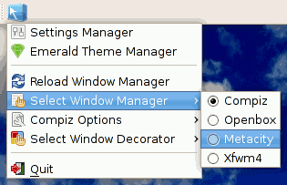

Compiz Fusion
Dieser Artikel wurde für die folgenden Ubuntu-Versionen getestet:
Ubuntu 14.04 Trusty Tahr
Zum Verständnis dieses Artikels sind folgende Seiten hilfreich:
 Compiz
Compiz  ist eine Sammlung von Programmen und Plugins rund um Compiz. Der Fenstermanager Compiz wird durch Compiz Fusion um einige Funktionen und Effekte erweitert. Zu Compiz Fusion gehört unter anderem der CompizConfig Einstellungs-Manager, der Fensterdekorator Emerald sowie diverse Erweiterungen (Plugins) für Effekte und Animationen.
ist eine Sammlung von Programmen und Plugins rund um Compiz. Der Fenstermanager Compiz wird durch Compiz Fusion um einige Funktionen und Effekte erweitert. Zu Compiz Fusion gehört unter anderem der CompizConfig Einstellungs-Manager, der Fensterdekorator Emerald sowie diverse Erweiterungen (Plugins) für Effekte und Animationen.
Compiz Fusion entstand aus der Zusammenlegung von Archiv/Beryl mit CompizExtras. Während Beryl eine eigenständige Entwicklung auf Basis eines Compiz-Forks darstellte, war CompizExtras eine Plugin-Sammlung für Compiz. Zwischen allen beteiligten Projekten (Beryl, Compiz, CompizExtras) wurde viel Code ausgetauscht und man entschied sich schließlich, die Projekte zu bündeln.
Inzwischen ist die Zusammenführung der beteiligten Projekte unter dem alten/neuen Namen "Compiz" abgeschlossen, sodass auch der Name "Compiz Fusion" obsolet ist (siehe Ikhaya 02/2009).
Plugins¶
Die Plugins werden über die folgenden Pakete installiert [1]:
compiz-fusion-plugins-main
compiz-fusion-plugins-extra (universe, optional)
compiz-gnome (universe, optional)
 mit apturl
mit apturl
Paketliste zum Kopieren:
sudo apt-get install compiz-fusion-plugins-main compiz-fusion-plugins-extra compiz-gnome
sudo aptitude install compiz-fusion-plugins-main compiz-fusion-plugins-extra compiz-gnome
Die meisten Plugins von Compiz und Compiz Fusion werden auf der Wiki-Seite CompizConfig Einstellungs-Manager erläutert. Außerdem findet sich im Compiz Fusion Wiki eine komplette Liste der Compiz Fusion-Plugins mit zusätzlichen Beschreibungen.
CompizConfig Einstellungs-Manager¶
Mit dem CompizConfig Einstellungs-Manager beschäftigt sich ein eigener Artikel.

Fusion-Icon¶
Das Fusion-Icon ist ein simples Panel-Applet, um Compiz Fusion zu starten und zu kontrollieren. Es funktioniert mit GNOME, XFCE und KDE und wird über das folgende Paket installiert:
fusion-icon (universe)
mit apturl
Paketliste zum Kopieren:
sudo apt-get install fusion-icon
sudo aptitude install fusion-icon
Eine ausführlichere Beschreibung findet man im Compiz Wiki .
Achtung!
Aufgrund der neuen Compiz-Version Fusion-Icon bitte nicht unter Ubuntu 11.04 installieren.
- Erstellt mit Inyoka
-
 2004 – 2017 ubuntuusers.de • Einige Rechte vorbehalten
2004 – 2017 ubuntuusers.de • Einige Rechte vorbehalten
Lizenz • Kontakt • Datenschutz • Impressum • Serverstatus -
Serverhousing gespendet von